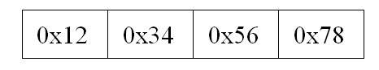
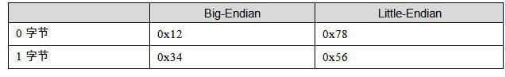
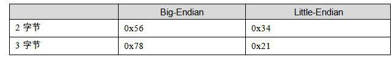

“endian”这个词出自Jonathan Swift在1726年写的讽刺小说《格列佛游记》（Gulliver’s Travels）。小人国的内战就源于吃水煮鸡蛋时究竟是从大头（Big-Endian）敲开还是从小头（Little-Endian）敲开，由此曾发生过6次叛乱，其中一个皇帝送了命，另一个丢了王位。
在不同的计算机体系结构中，对于数据（比特、字节、字）等的存储和传输机制有所不同，因而引发了计算机领域中一个潜在但是又很重要的问题，即通信双方交流的信息单元应该以什么样的顺序进行传送。如果达不成一致的规则，计算机的通信与存储将会无法进行。目前在各种体系的计算机中通常采用的字节存储机制主要有两种：大端（Big-endian）和小端（Little-endian）。
首先让我们来定义两个概念：
MSB是Most Significant Bit/Byte的首字母缩写，通常译为最重要的位或最重要的字节。它通常用来表明在一个bit序列（如一个byte是8个bit组成的一个序列）或一个byte序列（如word是两个byte组成的一个序列）中对整个序列取值影响最大的那个bit/byte。
LSB是Least Significant Bit/Byte的首字母缩写，通常译为最不重要的位或最不重要的字节。它通常用来表明在一个bit序列（如一个byte是8个bit组成的一个序列）或一个byte序列（如word是两个byte组成的一个序列）中对整个序列取值影响最小的那个bit/byte。
比如一个十六进制的整数0x12345678里面：

0x12就是MSB（Most Significant Byte），0x78就是LSB（Least Significant Byte）。而对于0x78这个字节而言，它的二进制是01111000，那么最左边的那个0就是MSB（Most Significant Bit），最右边的那个0就是LSB（Least Significant）。
Big-endian 和 little-endian的区别就是bit-endian规定MSB在存储时放在低地址，在传输时MSB放在流的开始；LSB存储时放在高地址，在传输时放在流的末尾。little-endian则相反。例如：0x12345678h这个数据在不同机器中的存储是不同，如表A-1所示。


表A-1
Little-Endian主要用于我们现在的PC的CPU中，即Intel的x86系列兼容机；Big-Endian则主要应用在目前的Mac机器中，一般指PowerPC系列处理器。另外值得一提的是，目前的TCP/IP网络及Java虚拟机的字节序都是Big-endian的。这意味着如果通过网络传输0x12345678这个整形变量，首先被发送的应该是0x12，接着是0x34，然后是0x56，最后是0x78。所以我们的程序在处理网络流的时候，必须注意字节序的问题。
big-endian和little-endian的争论由来已久，计算机界对两种方式的优劣进行了长期的争论，争论双方相互不妥协（至今仍未完全妥协）。Danny Cohen于1980年写的一篇名叫“On Holy Wars and a Plea for Peace”著名的论文形象地将双方比喻成《格列佛游记》小人国里征战的双方。从此以后这两个术语开始流行并且一直延用至今。